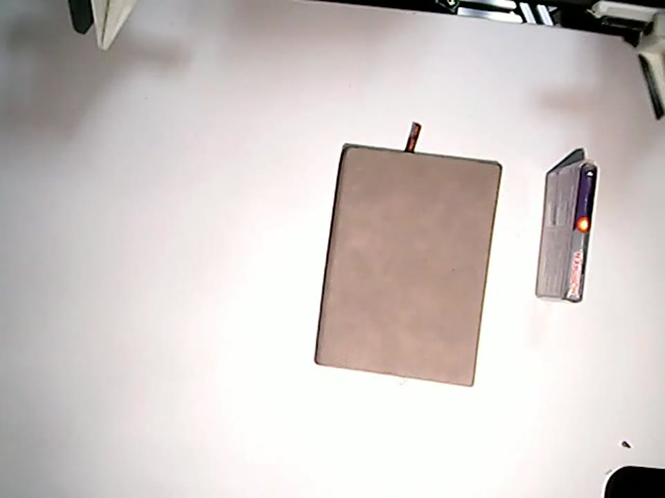

Physical benchmark
Build and reproduce DIYRobot
DIYRobot is the single physical platform used by KinRT. This page connects the released lower-host source, hardware contract, zeroing, three-camera alignment, LeRobot data, KinRT training, and guarded evaluation in one workflow.
Know what is reproducible today
The public release now includes the reviewed lower-host implementation under hardware/diyrobot/lower_host, source hashes, calibration procedures, and camera-reference data. The source host was read only: no remote file or hardware state was changed during this audit.
CAD, link and frame dimensions, camera-mount geometry, wiring drawings, task-mat dimensions, and a printable reference mat will be released later. Do not derive them from photographs or claim a mechanically identical reproduction before those artifacts are available.
DIYRobot is the only public platform and runtime name. The earlier internal name appears only in immutable source-provenance and historical-checkpoint records; it does not identify a second robot or a public code path.
Assemble the verified electrical topology

| Subsystem | Verified hardware | Addressing |
|---|---|---|
| Leader arms | 14 Feetech STS3215 | Left 1-7; right 8-14 |
| Follower arms | 14 RobStride O3 | Left 1-7; right 11-17 |
| Mobile base | Three Damiao DM4310 | 0x21, 0x22, 0x23 |
| Lift | Damiao DM4310 + ESP32 optical limits | 0x24 |
| Vision | C930e, C920, ARKMICRO | Right wrist, left wrist, overhead |
| Parameter | Released value | Scope |
|---|---|---|
| Wheel radius | 0.05 m | Software kinematics |
| Base radius | 0.125 m | Center-to-wheel |
| Wheel speed cap | 100 RPM | Command safety cap |
| Lift homing | -1, step 2 deg, kp=8, kd=0.3 | Automatic homing disabled by default |
| Lift thresholds | 30 / 90 deg | Base/lift coordination |
| Fast base threshold | 0.2 m/s | Blocks upward lift target |
One qualified operator must own a tested emergency stop or power disconnect. Clear and support the swept volume before any tool that can enable follower torque.
Install the lower-host package
Use the LeRobot revision validated for the platform. The release does not claim compatibility with every upstream revision.
cd /path/to/lerobot
python3 -m venv .venv
. .venv/bin/activate
python -m pip install -e .
python -m pip install pyserial opencv-python scservo-sdk
cp -a /path/to/KinRT/hardware/diyrobot/lower_host \
src/lerobot/robots/diyrobot
python -m pip install -e \
/path/to/KinRT/policy/pi05/packages/openpi-client
python -c "from lerobot.robots.diyrobot import DIYRobot; print(DIYRobot.name)"Run OFFLINE_SELF_TEST=1 ./start_diyrobot_pi05_policy_client.sh. It must report 14 motors and action shape (1, 14) without opening cameras or actuator buses.
Map devices by identity
The release omits the original serial numbers and USB topology. Create target-specific udev rules that map verified devices to these semantic paths:
| Path | Physical role |
|---|---|
/dev/diyrobot/leader | Feetech leader bus |
/dev/diyrobot/follower-left | Left RobStride bus |
/dev/diyrobot/follower-right | Right RobStride bus |
/dev/diyrobot/chassis | Damiao chassis/lift bus |
/dev/diyrobot/lift-limits | ESP32 optical-limit reader |
/dev/diyrobot/camera-* | Right wrist, left wrist, overhead |
ls -l /dev/serial/by-id /dev/serial/by-path
ls -l /dev/v4l/by-id /dev/v4l/by-path
lsusb
udevadm info --query=property --name=/dev/ttyUSB0
udevadm info --query=property --name=/dev/video0Confirm each physical role without trial motion. The active strict path uses separate left and right follower buses; the generic class also retains a single-bus compatibility mode. Do not mix their calibration or port model.
Calibrate and zero one joint at a time
Generate all calibration files on the target robot. The tools do not issue pose targets, but follower sampling may briefly enable and disable the selected RobStride motor.
cd /path/to/lerobot/src/lerobot/robots/diyrobot
python diyrobot_rest_range_calibrate.py rest \
--device both --side left
python diyrobot_rest_range_calibrate.py range \
--device follower --side left --duration 20
python diyrobot_rest_range_calibrate.py show \
--device both --side leftMove joints by hand only through a conservative working range; do not use mechanical stops as limits. Repeat for the right side, record direction/scale evidence, and physically validate each joint before marking it validated.
| Required evidence per joint | Acceptance rule |
|---|---|
| Leader/follower identity | Name, side, ID, and bus agree |
| Rest and range | Rest lies inside a conservative absolute range |
| Direction and scale | Base, positive, and negative samples agree |
| Physical validation | Tiny supervised test completed without drift or mismatch |
| Record | Robot ID, operator, time, and file digests stored |
The complete commands, file schemas, lift-zero procedure, and recalibration triggers are in the calibration guide.
Align all three cameras to the checkpoint contract
| View | Collection key | Policy key | Format |
|---|---|---|---|
| Overhead | overhead | cam_high | 640 x 480 @ 30 |
| Left wrist | left_gripper | cam_left_wrist | 640 x 480 @ 30 |
| Right wrist | right_gripper | cam_right_wrist | 640 x 480 @ 30 |
The current code does not rectify images or apply a homography. Its browser overlay uses the overhead rectangle (128,151) to (458,416) at 640 x 480. The saved overlay JSON is not consumed by recording or policy inference.
Checkpoint-compatible reproduction also depends on pitch, roll, yaw, field of view, task-mat pose, exposure, and semantic camera mapping. Physically align the task mat to all four pixel corners.
./start_diyrobot_three_camera_webui.sh
# Stop the preview before collection or policy inference.The task-mat dimensions and printable reference are pending. See the camera-alignment guide for normalized corners, acceptance checks, and the future homography release contract.
Collect and inspect a smoke episode
TASK="Put the pill box into the center of the notebook." \
REPO_ID="local/diyrobot_smoke" ROOT="/data/diyrobot/smoke" \
EPISODES=1 EPISODE_TIME=20 RESET_TIME=0 FPS=20 \
./start_diyrobot_pi05_record.shEach frame must contain finite 14-D observation.state, the 14-D target actually sent as action, three RGB views, and exact task text. Strict-teleop JSONL is diagnostic data, not training data.
Episode, task, frame, parquet, and video counts agree.
Three streams are current, correctly named, upright, and synchronized.
State/action order and degree units match the 14-D contract.
Failed demonstrations remain outside a success-only training set.
Prepare method labels and train
Freeze the dataset digest, then create and verify K=4 supervision using the KinRT method procedure with the DIYRobot dataset path. FULL and LoRA are optimization regimes of the same method.
cd /path/to/KinRT/policy/pi05
uv run python scripts/compute_norm_stats.py \
--config-name kinrt_full_diyrobot
uv run python scripts/train.py kinrt_full_diyrobot \
--exp-name diyrobot_kinrt_fullUse kinrt_lora_diyrobot for LoRA. Keep the selected name identical across normalization, training, checkpoint serving, and reporting. The reported DIYRobot runs use 8,000 steps and effective batch size 32.
Deploy through guarded stages
No cameras or actuator buses.
Cameras and feedback, no target commands.
One chunk step and short duration.
Fixed checkpoint and physical protocol.
POLICY_SERVER="<gpu-host>:<port>" TASK_ID=0 \
./start_diyrobot_pi05_policy_client.sh
POLICY_SERVER="<gpu-host>:<port>" TASK_ID=0 \
ALLOW_MOTION=1 DURATION=30 ACTION_CHUNK_STEPS=1 \
./start_diyrobot_pi05_policy_client.shStop immediately on startup mismatch, unexpected direction, drift, stale feedback, camera failure, policy timeout, invalid action shape, or collision risk. Software cleanup is not a substitute for the physical stop.
Keep evaluation fixed when using optional OOD data
Evaluate the five prompt-v3 tasks with 50 trials each in the original environment. Record task, prompt variant, checkpoint, calibration digests, camera reference, operator, outcome, and stop reason for every trial.

Add the 100 OOD-lighting demonstrations only as a separately reported training condition. Test the resulting checkpoint with the same 50-trial-per-task protocol in the original environment so the comparison remains controlled.
The source and protocol are released; physical execution was not rerun during this audit. Numeric equivalence still depends on checkpoints, target-specific calibration, and the pending mechanical/camera geometry release.